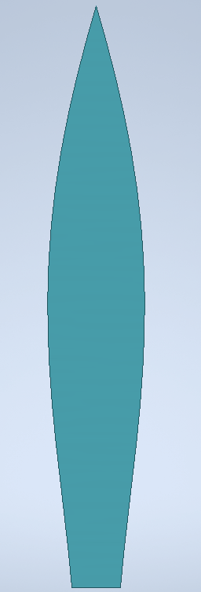
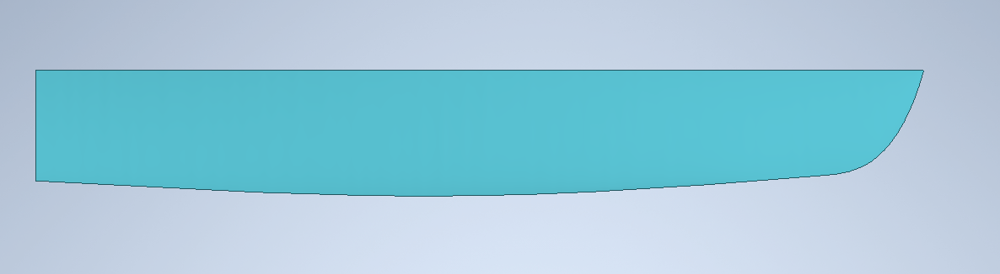
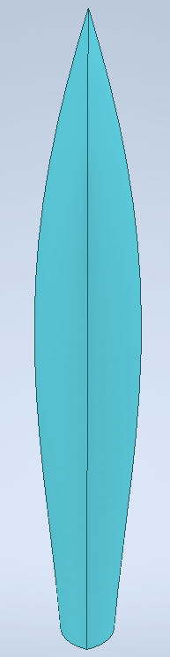
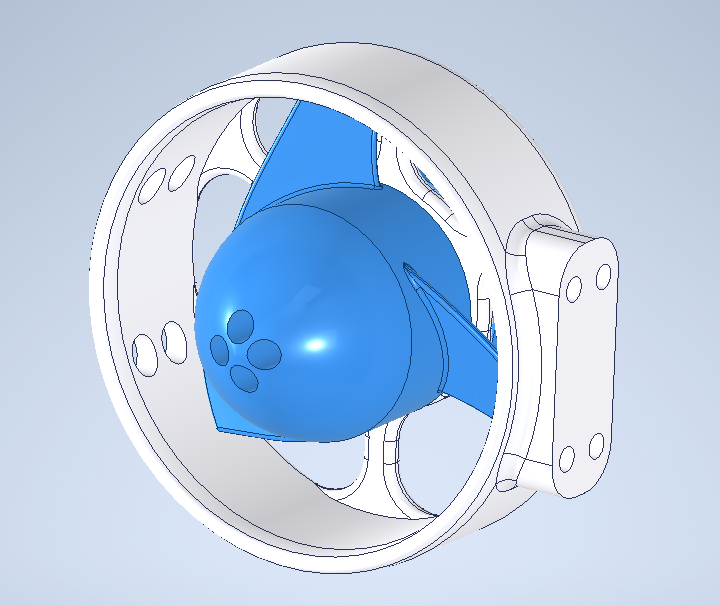
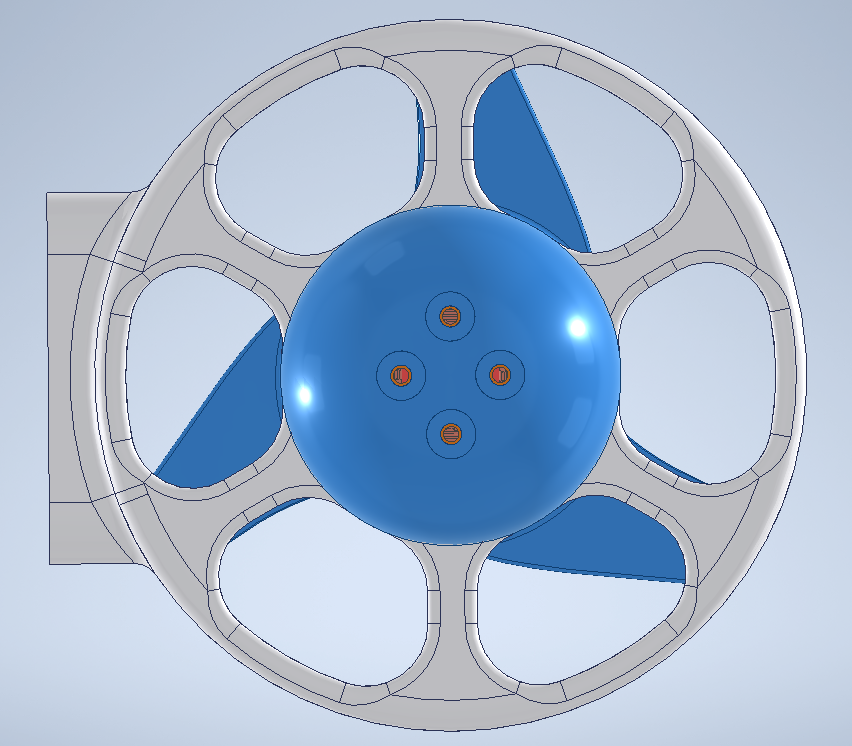
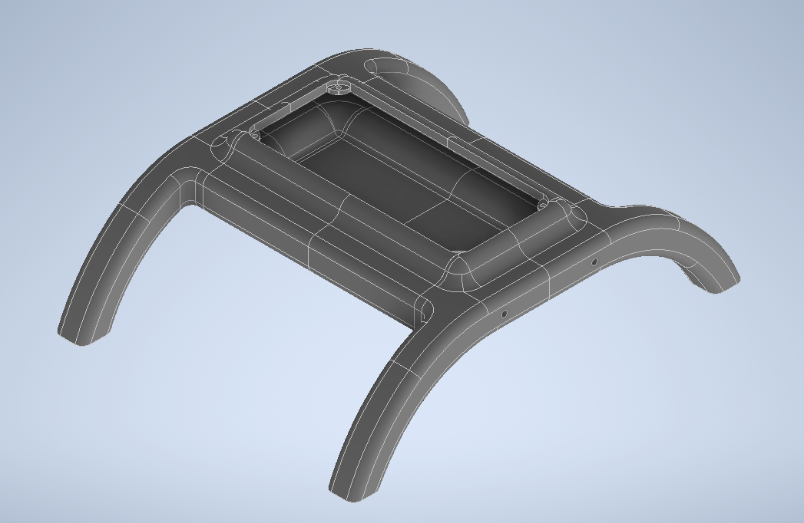
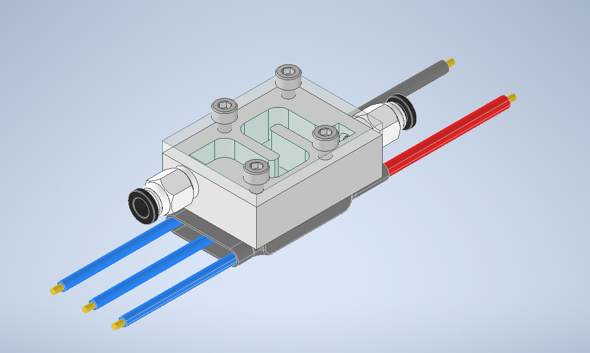
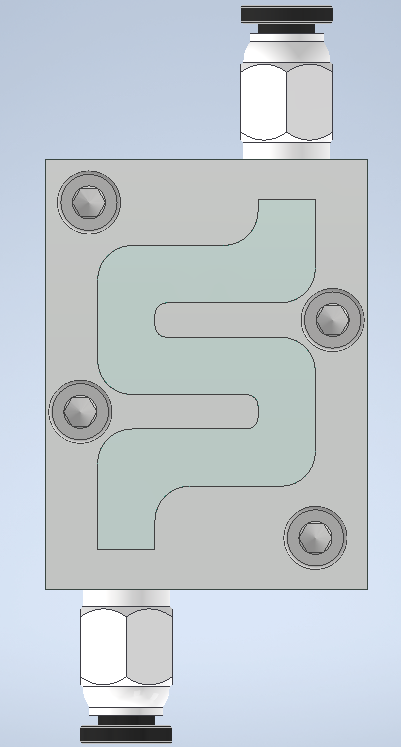

Principles of Integrated Engineering (PIE) Fall 2024 Project
Homepage (High-Level Overview)
Project Title
Autonomous GPS-Guided Boat Navigation System
Team Members
Belle See and Sage Gilbert-Diamond - Electrical/Software Design
Filip Kypriotis, Jade Campbell and Zac Adeboye - Mechanical Design
Everyone - Testing and Integration
Project Summary
This project focuses on building an autonomous boat navigation system using GPS and ESC motor controls. The boat calculates its heading and adjusts its path based on location data to navigate through predefined waypoints.
The compass was broken, so the project adapted by relying solely on GPS data.
Components like foam and glue were used for the physical assembly.
Data and Energy Flow
Data and Energy Flow Diagram
Explanation
This diagram illustrates the interaction between the data and energy systems in the boat.
User inputs waypoints, which are processed by the Arduino Uno, acting as the central controller.
The GPS module provides real-time location data to the Arduino Uno, which calculates the current and target headings.
Based on this information, the Arduino sends motor speed and direction signals (via PWM) to the ESCs controlling the brushless motors.
The energy flow highlights the power distribution from the batteries to the individual components, ensuring consistent operation.
Evolution of the Code and Circuit Design
Code Evolution
Initial Logic:
Movement was determined by the boat’s position relative to the final destination.
If the boat moved past the destination on either latitude or longitude, it would switch direction (left/right).
Issue: This caused the boat to take inefficient routes.
Second Iteration:
Tracked previous and current coordinates to calculate if the boat was moving closer to the destination along latitude or longitude.
Flipped direction if the boat got further away.
Issue: The boat failed to account for situations where it faced the wrong direction entirely.
Final Iteration:
Calculated the current heading (based on previous and current coordinates) and compared it to the target heading (current to destination coordinates).
If the heading deviated beyond 45 degrees, the boat corrected its course.
Added logic to switch direction based on proximity to the target.
Removed waypoints logic since heading logic was precise enough
The circuit has always stayed the same since it’s a simple design where we just plug into established circuit elements such as an ESC and a GPS module.
System Diagrams
Circuit Design
Description: The circuit connects GPS and ESC components to the Arduino.
Connections:
ESCs: Connected to Digital Pins 9 and 10 for PWM motor control.
GPS Module: RXD connected to Digital Pin 3, TXD to Digital Pin 4.
MATLAB was used to compile these formulas, ensuring the calculated dimensions achieved proper buoyancy and stability.



Fabrication Process:
1-inch foam layers were glued together with wood glue.
The glued foam blocks were CNC-milled into shape based on the validated dimensions.
Final finishing included sanding, coating with fiberglass and epoxy for waterproofing, and spray-painting for durability and aesthetics.
Thrust System
Design Goals:
Ensure motors deliver adequate propulsion for navigating currents and waypoints.
Protect motors from debris (e.g., seaweed and branches) while maintaining efficiency.
Implementation Details:
CAD files from a BlueROV thruster were modified to fit the brushless motor dimensions.
Caps were added to both ends of the motor to prevent debris intake, minimizing operational issues during testing.
Motors were secured to the hulls using custom 3D-printed mounts, reinforced with epoxy and super glue for stability.


Waterproofing
Hull Waterproofing:
The foam hulls were coated with fiberglass and epoxy for structural integrity and waterproofing.
Spray paint provided an additional layer of protection against water infiltration.
Electrical Housing Waterproofing:
The platform housing electrical components was spackled, sanded, and painted to create a water-resistant enclosure.
The lid design included tight tolerances to block water splashes while remaining removable for maintenance and upgrades.

Motor Selection
Considered Options:
Motors specifically designed for underwater applications were evaluated but rejected due to extended delivery times.
Brushless motors were selected for their high torque-to-speed ratio, critical for consistent thrust in aquatic environments.
Selection Rationale:
The VGEBY1 brushless motors demonstrated sufficient torque and durability during external testing, such as their ability to handle high-stress scenarios like drone crashes.
ESC Coolers
Design and Fabrication:
The ESC coolers were modeled after PC cooling systems, leveraging the boat’s motion to pass water through cooling channels.
Aluminum stock was machined into radiator-like channels, mounted to the ESCs using thermal paste and glue.
Passive Cooling Operation:
As the boat moves, water is channeled through tubing into the ESC cooler, dissipating heat without additional power requirements.


Subsystem Relationships
The mechanical, electrical, and software components work together to achieve the boat's autonomous functionality:
Motor Mounts and ESCs: Motors are securely mounted to the hulls using 3D-printed brackets reinforced with epoxy and super glue. Each motor is powered by an ESC, which receives PWM signals from the Arduino to control speed and direction.
Electrical Housing Platform: Protects electrical components like the Arduino and ESCs while allowing for clean wiring connections to motors and sensors.
Boat Hulls and Waterproofing: Provides buoyancy and structural support while maintaining watertight integrity with fiberglass and epoxy coatings.
Software Integration: The Arduino reads GPS data, calculates headings, and adjusts motor PWM signals to ensure real-time course corrections.
Battery Selection
Considered Options:
Motors specifically designed for underwater applications were evaluated but rejected due to extended delivery times.
Brushless motors were selected for their high torque-to-speed ratio, critical for consistent thrust in aquatic environments.
Selection Rationale:
The VGEBY1 brushless motors demonstrated sufficient torque and durability during external testing, such as their ability to handle high-stress scenarios like drone crashes.
Mathematical Justification for Choosing OVONIC 3S Lipo Battery
Motor Specifications:
KV (RPM/V): 650
Number of Cells (Lipo): 3-6S
Max Continuous Current (A): 39A
Max Continuous Power (W): 865W
Internal Resistance: 0.011Ω
Battery Specifications:
Voltage (V): 11.1V (3S)
Capacity (mAh): 2200mAh
Discharge Rate (C): 35C (Burst 70C)
Step-by-Step Justification:
Voltage Compatibility:
The motor can handle 3-6S Lipo batteries. A 3S battery has a nominal voltage of 11.1V, which is within the motor's operating range. This ensures that the motor will run efficiently without being over or under-powered.
Current Draw:
The battery’s continuous discharge capability is calculated as follows:
This minimal drop ensures efficient power delivery.
Conclusion:
The OVONIC 3S Lipo Battery 35C (Burst 70C) 2200mAh 11.1V meets and exceeds the motor's current and power requirements while also providing sufficient voltage and low internal resistance for efficient operation. This makes it an appropriate and reliable choice for powering your motor.
Prototype
Before constructing the final autonomous GPS-guided boat, we developed a working prototype to test and configure our code, electrical systems, and overall functionality. The prototype allowed us to identify potential issues and refine our design for optimal performance.
Materials and Construction
The prototype was constructed using accessible and cost-effective materials while still incorporating key components to simulate real-world conditions.
Hulls: The hulls were made from PVC tubes cut in half lengthwise, providing a lightweight, buoyant structure.
Electronics Housing:
An acrylic box was laser-cut and assembled using acrylic glue for rigidity and electrical tape for sealing.
As an added precaution, the electronic components inside the acrylic box were placed within a Ziploc bag to ensure protection against water ingress.
Platform: A flat platform made from 1/4-inch plywood was mounted on the hulls, providing a stable surface for the acrylic box and other components.
Key Features
The prototype incorporated the following real components to mimic the final design:
Brushless motors and ESCs to test thrust and propulsion control.
OVONIC 3S Lipo battery to evaluate power delivery and capacity.
GPS module for navigation logic and heading determination.
Arduino microcontroller for implementing and debugging the control algorithms.
Purpose and Testing
The prototype served as a critical tool for testing the following systems:
Code Configuration: The prototype allowed us to evaluate and refine our navigation algorithms, ensuring the boat could calculate headings, correct drift, and approach waypoints effectively.
Power and Propulsion: By using the real motors and battery, we confirmed that the power system met the operational requirements and could handle continuous operation without overheating or significant voltage drops.
Waterproofing: The sealed acrylic box and additional Ziploc bag protection ensured that no water reached the sensitive electronics during extended testing in water.
Learnings and Refinements
The prototype revealed several insights that informed our final design:
The PVC hulls provided sufficient buoyancy, confirming the feasibility of our dual-hull approach.
Waterproofing with electrical tape was not as reliable as anticipated, leading us to adopt fiberglass and epoxy for the final design.
Placement of the GPS module on the acrylic platform minimized interference and improved data accuracy.
The Ziploc bag provided excellent secondary protection, which we plan to incorporate into future iterations for redundancy.